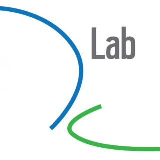

LOCATION & TIME
Simons Institute Main Conference Room
4/25 Monday 9-6 PM
4/26 Tuesday 9-1 PM
INVITED SPEAKERS
Sinan Aral
Susan Athey
Peter Bearman
Sandra Gonzalez Bailon
Justin Grimmer
Matt Jackson
Michael Kearns
Eric Klinenberg
Bruce Kogut
Matt Salganik
Emma Spiro
Duncan Watts
PROGRAM COMMITTEE
Michael Jordan
Chris Shannon
Jennifer Johnson-Hanks
Tom Griffiths
Bin Yu
Laura Stoker
Jasjeet S. Sekhon
SPONSORS
Data Science Planning Initiative
Simons Institute for the Theory of Computing
Social Science Matrix

D-Lab
